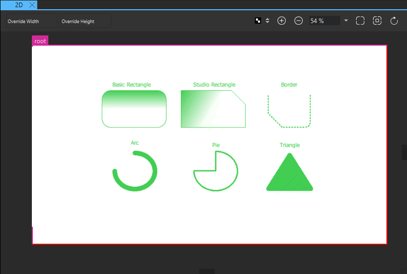
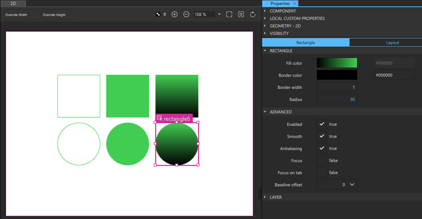
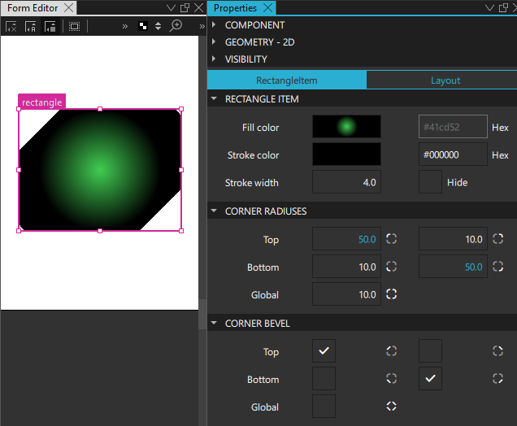
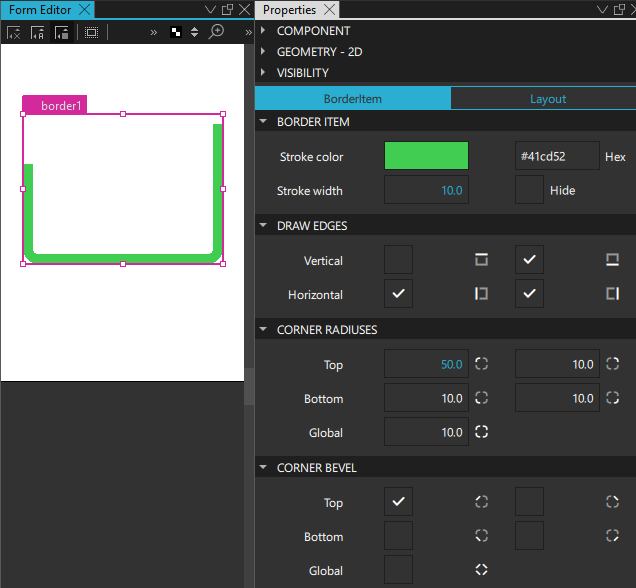
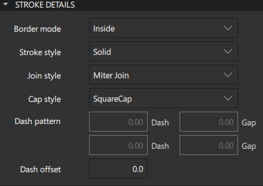
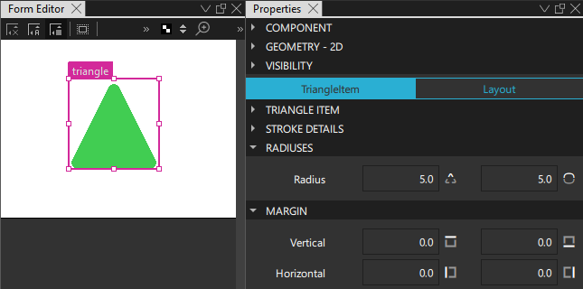
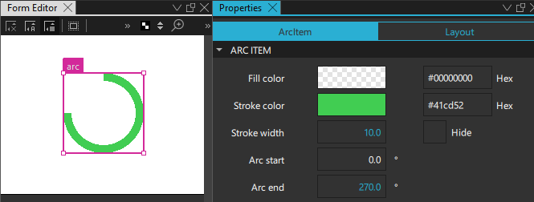
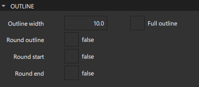
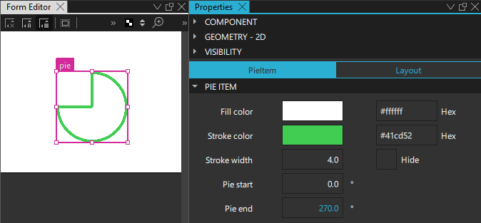
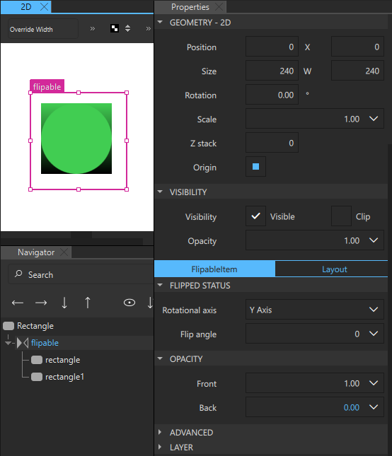

Shapes
Qt Design Studio is a UI design tool rather than a generic drawing tool, and therefore, the focus is on providing ready-made UI controls that you can modify according to your needs. The values of some properties of the controls are specified by using styling, and therefore you cannot change them.
However, you can use some of the components in Components to draw basic shapes, such as rectangles. In addition, Qt Design Studio comes with a set of more powerful and flexible graphical primitives, that allow creating more complex shapes, such as borders, triangles, arcs, and pies in the 2D view.

Most visual components in Components are based on the Item component. Even though it has no visual appearance itself (similarly to a mouse area, for example), it defines all the properties that are common across visual components, such as position, size, and visibility. For more information, see Basic Component Properties.
In addition, each component has a set of properties that specify its visual appearance and behavior. You can modify the property values to set fill and border colors, stroke width, and other characteristics of the shapes.
The following sections describe the available shapes and their properties in more detail. You can modify the values of the properties in the Properties view.
Rectangle
The basic Rectangle component is used for drawing shapes with four sides and corners, as well as a solid border.

Rectangles can be filled either with a solid fill color or a linear gradient that you set in the Fill color field. You can also use a color picker to select colors and a gradient picker to select gradients from a predefined set of WebGradients.
An optional solid border can be added to a rectangle with its own color and thickness by setting the values of the Border color and Border width fields. To create a border without a fill color, select the button that sets the color to transparent.
By setting the value of the Radius field, you can create shapes with rounded corners. With the right combination of the values of the rectangle width, height, and radius properties, you can create oval and circular shapes. For example, to draw a full circle, first draw a rectangle with all four sides equal, and then set its radius to half the side length.
When drawing curved edges, consider enabling the Antialiasing check box in the Advanced section to improve the appearance of your shape.
Studio Rectangle
If you want to modify each corner of the rectangle independently or use a dashed border, create an instance of the Rectangle component available in Components > Qt Quick Studio Components instead of the basic Rectangle component available in Default Components > Basic.
By setting the values of properties in the Corner Radiuses section, you can draw each corner independently. By using radius values in combination with the values in the Corner Bevel section, you can create shapes with cut corners.

In addition to linear gradients, you can specify conical and radial gradients in the Fill color field.
In the Stroke Details section, you can specify the border mode, line style, and dash pattern for dashed and dotted lines. For more information, see Strokes.
Border
The Border component is used to create borders out of four segments: left, top, right, and bottom. By selecting the check boxes in the Draw Edges section, you can determine whether each of the segments is visible. This enables you to draw solid or dashed lines with specified dash patterns and joint and cap styles.

Set the color of the border in the Stroke color field and its thickness in the Stroke width field. Then specify additional properties for borders in the Stroke Details section.
Strokes
In the Stroke Details section, you can specify the border mode, line style, and dash pattern for dashed and dotted lines.

In the Border mode field, you can specify whether the border is drawn along the inside or outside edge of the component, or on top of the edge.
If you select a dashed or dotted pattern in the Stroke style field, you can specify the dash pattern as the dashes and the gaps between them in the Dash pattern field. The dash pattern is specified in units of the stroke width. That is, a dash with the length 5 and width 10 is 50 pixels long.
The value of the Dash offset field specifies the starting point of the dash pattern for a line. It is measured in terms of the units used to specify the dash pattern. For example, a pattern where each stroke is four units long, followed by a gap of two units, will begin with the stroke when drawn as a line. However, if the dash offset is set to 4.0, any line drawn will begin with the gap. Values of the offset up to 4.0 will cause part of the stroke to be drawn first, and values of the offset between 4.0 and 6.0 will cause the line to begin with part of the gap.
In the Join style field, select Miter Join to extend the outer edges of the lines to meet at an angle and to fill the area between them. Select Bevel Join to fill the triangular notch between the two lines. Select Round Join to fill a circular arc between the two lines.
The value of the Cap style property specifies whether line ends are square or rounded.
Triangle
The Triangle component can be used to draw triangles with different dimensions and shapes. The component is enclosed in an invisible rectangle that determines its size. The dimensions of the triangle can be changed to make it elongated or squatter with space around it by setting the top, bottom, left, and right margins in the Margin section. The margins are set between the triangle and the edges of the parent rectangle.

The fill and stroke color property values are set in the same way as for a rectangle. The border property values are described in Strokes.
Arc
An arc is specified by setting values in degrees in the Arc start and Arc end fields. The arc can be just a line or a filled outline. The properties of the line or outline are described in Strokes.

The area between the arc's start and end points or the area inside the outline are painted using either a solid fill color or a gradient.

To create an arc with an outline, select the Full outline check box. The Outline width field sets the width of the arc outline, including the stroke.
The Round outline, Round start, and Round end properties specify whether the end points of the arc outline have rounded caps. For an arc that does not have an outline, the Cap style field in the Stroke Details section specifies whether the line ends are square or rounded.
Pie
The Pie component is used to create a pie slice, a pie that is missing slices, or just the pie rind (similar to an arc), depending on the values of the Pie start and Pie end fields and the Hide check box.

The filling of the pie is painted using either a solid fill color or a gradient. The fill and stroke color property values are set in the same way as for a rectangle. The border property values are described in Strokes.
Flipable
A Flipable component can be visibly flipped between its front and back sides, like a card. The front and back sides are specified by using any two components inside the Flipable component. The component with the higher z-order is the front side. The Front and Back fields in the Opacity section are used to hide and show either the front or back side of the item at a time.

The Flip angle property is used to animate the angle of the component to produce the flipping effect. The value of the Rotational axis property determine whether the component is rotated around the x-axis or the y-axis.
Summary of Shapes
The following table lists the components that you can use to draw shapes. The Location column indicates the location of the component in Components. The MCU column indicates which components are supported on MCUs.
| Icon | Name | Location | MCU | Purpose |
|---|---|---|---|---|
| Arc | Qt Quick Studio Components | An arc that begins and ends at given positions. | ||
| Border | Qt Quick Studio Components | A line with four segments that you can show and shape individually. | ||
| Pie | Qt Quick Studio Components | A pie slice or a pie with a slice missing from it. | ||
| Flipable | Qt Quick Studio Components | A component that can be visibly flipped between its front and back sides, like a card. | ||
| Rectangle | Default Components - Basic |  | A rectangle that is painted with a solid fill color or linear gradient and an optional border. You can use the radius property to draw circles. | |
| Rectangle | Qt Quick Studio Components | An extended rectangle that is painted with a solid fill color or linear, conical, or radial gradients, and corners that you can shape independently of each other. | ||
| Triangle | Qt Quick Studio Components | A triangle with different dimensions and shapes that is enclosed in an invisible rectangle. |